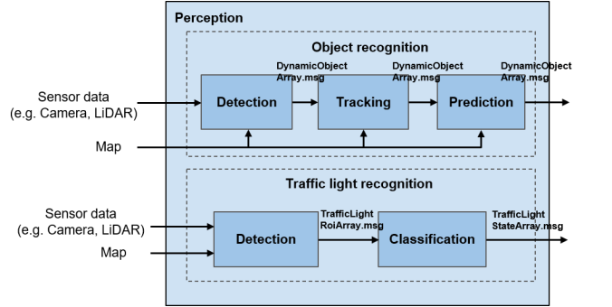
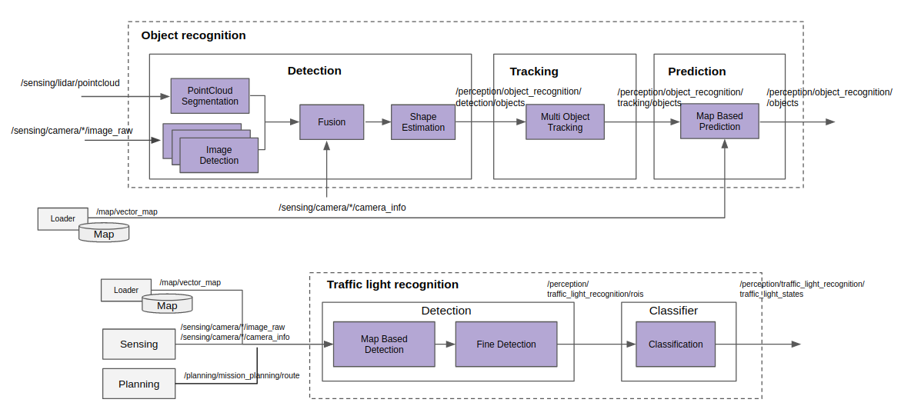
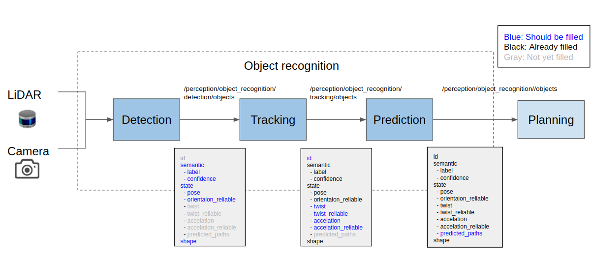
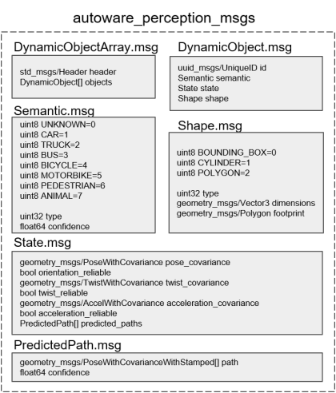
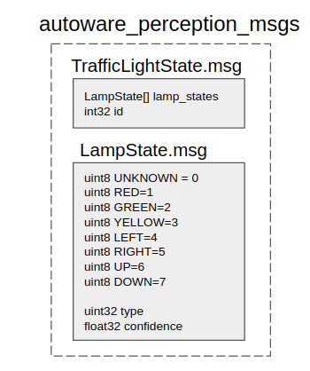

Perception#
Overview#
Perception stack recognizes the surrounding of the vehicle to achieve safe and efficient autonomous driving. The output of Sensing describes environment "as is", and is usually too primitive to be used directly for high-level planning. Perception stack will extract key and organize it into more meaningful data for Planning stack.

Role#
Perception stack has 2 main roles.
- Object Recognition
- Traffic Light Recognition
Use Cases#
Perception must provide enough information to support following use cases:
| Use case | Required output from Perception |
How the output is used |
|---|---|---|
| 1. Changing lane | Object Recognition-Prediction: - Predicted paths of objects on target lane |
To decide when and where changing lane depending on objects' predicted paths. when: which timing to trigger lane change depending on obstacles position and velocity. where: where to go depending on objects' position and shape. |
| 2. Turning at intersection | Object Recognition- Prediction: - Predicted paths of objects at an intersection |
To decide when turning at an intersection depending on objects' predicted path. when: which timing to turning depending on objects' future paths. |
| 3. Avoiding parked vehicles | Object Recognition- Detection: - Objects' class, shape and, position Object Recognition- Tracking: - Objects' velocity |
To decide where to avoid objects depending on objects' properties. where: where to avoid objects in given area depending on objects' class, velocity, shape and position. |
| 4. Stopping at a crosswalk when pedestrians are walking | Object Recognition- Prediction: - Predicted paths of objects at a crosswalk |
To decide where stopping based on pedestrians' position and velocity. |
| 5. Passing intersection without traffic lights | Object Recognition- Detection: - Objects' shape. Object Recognition- Prediction: - Predicted paths of objects at an intersection |
To decide when passing intersection depending on objects' properties. when: which timing to pass intersection while negotiating with other objects based on objects' properties like, predicted paths and shape. |
| Merging into another lane | Object Recognition- Prediction: - Predicted paths of objects at merging area |
To decide when merging into another lane depending objects' predicted paths. |
| 6. Taking over Pedestrian/Cyclists | Object Recognition- Detection: - Objects' shape, position and orientation. Object Recognition- Tracking: - Objects' velocity |
To decide when and where taking over depending on objects' predicted paths when: which timing to taking over depending on obstacles position and velocity. where: where to go depending on objects' position and shape. |
| 7. Stopping/yielding to an obstacle | Object Recognition- Detection: - Objects' shape, position, and orientation Object Recognition- Tracking: - Objects' velocity |
To decide where to stop/yield based on pedestrians' position and velocity. |
| 8. Passing intersection with traffic lights | Traffic Light Recognition- Classification: - Traffic signal status |
To decide whether to go or stop based on traffic signal status. |
Requirements#
From above table, high-level requirements of Perception stack are summarized as below:
- Perception stack should recognize following objects: (Use Case 3, 5, 6)
- vehicle
- pedestrian
- cyclists
- other objects that is on road or parking lot
- For each object, Perception stack should provide following information: (Use Case 1-7)
- Pose (done in ObjectDetection)
- Shape (done in ObjectDetection)
- Predicted future path (done in Object Tracking+Prediction)
- Perception stack should provide traffic light information: (Use Case 😎
- The status of traffic light
- Unique id of traffic light from map
Input#
| Input | Topic (Data Type) | Explanation |
|---|---|---|
| LiDAR | /sensing/lidar/pointcloud( sensor_msgs::PointCloud2) |
Pointcloud data captured by LiDAR comes from Sensing stack. Perception stack is allowed to choose subscribing to pointcloud with/without background depending on algorithms. |
| Camera | /sensing/{camera_name}/image( sensor_msgs::Image) |
Image data captured by Camera comes from Sensing stack. CameraInfo contains intrinsic parameters for the image. |
| Map | /map/vector_map( autoware_lanelet2_msgs::MapBin) |
This is Map data in lanelet2 format. Map stack has utility packages for processing map data. |
| Drive Route (optional) | /planning/route( autoware_planning_msgs::Route) |
This is route information for reaching a destination. In Perception stack, it is used for detecting the traffic lights associated with route information. |
Output#
| Output | Topic Name (Data Type) | Explanation |
|---|---|---|
| Dynamic Object | /perception/object_recognition/objects( autoware_perception_msgs::DynamicObjectArray) |
This includes obstacles' information. An obstacle is described by 3 major properties; State, Shape, Semantic. Detail design for these properties is in below Object Recognition section. |
| Traffic Light State | /perception/traffic_light_recognition/traffic_light_states( autoware_perception_msgs::TrafficLightStateArray) |
This includes the status of traffic light signals in array format. |
Design#
This Perception stack consists of 2 separated modules and each module can be subdivided into following components:
- Object Recognition (satisfies Requirement 1 and 2)
- Detection
- Tracking
- Prediction
- Traffic Light Recognition (satisfies requirement 3)
- Detection
- Classification

Key points of the structure#
- Interfaces are separated according to the current algorithm level.
- Enable complex autonomous driving use cases by including information like objects' future movement.
- Depends on technology development in the future, this structure might be changed (e.g. E2E).
Object Recognition#
Role#
Recognize obstacles that could potentially move. Provide detail information for obstacles required in the Planning stack.
The motivation behind recognizing obstacles comes from a requirement for balancing safety and efficiency in autonomous driving. If emphasizing safety too much, it needs to consider every possible movement of obstacles. Autonomous vehicles could end up freezing. If emphasizing efficiency too much, recognize every object as static obstacles. A car could hit a pedestrian in an intersection because of the efficient drive to a destination. Balanced autonomous driving is achieved by recognizing obstacles.
Requirement#

Detection#
Detection component detects objects from sensor data.
Detection component is responsible for clarifying the following objects' property.
| Property | Definition | Data Type | Parent Data Type |
|---|---|---|---|
| type | Class information | uint8 |
autoware_perception_msgs::Semantic |
| confidence | Class's confidence 0.0~1.0. | float64 |
autoware_perception_msgs::Semantic |
| pose | Position and orientation | geometry_msgs::PoseWithCovariance |
autoware_perception_msgs::State |
| orientation_reliable | Boolean for stable orientation or not | bool |
autoware_perception_msgs::State |
| shape | Shape in 3D bounding box, cylinder or polygon | autoware_perception_msgs::Shape |
autoware_perception_msgs::DynamicObject |
Tracking#
Tracking component deals with time-series processing.
Tracking component is responsible for clarifying the following objects' property.
| Property | Definition | Data Type | Parent Data Type |
|---|---|---|---|
| id | Unique object id over frames | uuid_msgs::UniqueID |
autoware_perception_msgs::DynamicObject |
| twist | Velocity in ROS twist format. | geometry_msgs::TwistWithCovariance |
autoware_perception_msgs::State |
| twist_reliable | Boolean for stable twist or not. | bool |
autoware_perception_msgs::State |
| acceleration | Acceleration in ROS accel format. | geometry_msgs::AccelWithCovariance |
autoware_perception_msgs::State |
| acceleration_reliable | Boolean for stable acceleration or not. | bool |
autoware_perception_msgs::State |
Prediction#
Prediction component is responsible for clarifying the following objects' property.
| Property | Definition | Data Type | Parent Data Type |
|---|---|---|---|
| predicted_path | Predicted future paths for an object. | autoware_perception_msgs::PredictedPath[] |
autoware_perception_msgs::State |
Necessary information is defined in autoware_perception_msg::DynamicObjectArray.msg with layered msg structure.

Input#
LiDAR#
sensor_msgs::PointCloud2
LiDAR input is an essential input for recognizing objects. Its ability to describe the 3D world is utilized in detecting obstacles surrounding the vehicle.
Camera (optional)#
sensor_msgs::Image
Camera input is used to obtain details about obstacles. Fine resolution camera enables to detect objects at far distance with high accuracy.
Map#
autoware_lanelet2_msgs::MapBin
Assuming the obstacles which follow rules in a map, Perception stack can infer objects' property such as orientation or future movements by using map information.
Output#
autoware_perception_msgs::DynamicObjectArray
Recognized objects with predicted paths are used in situations like intersection, crosswalk and lane change. Planning stack uses objects' information for avoiding objects or following a vehicle ahead.
Traffic light recognition#
Make sense of traffic light's signal.
Definition#
Not only classifying its color but also understanding unique signals like arrow signals.
It needs to recognize traffic light signals in order to ensure safe autonomous driving.
Requirement#
Need to fill lamp_states in autoware_traffic_light_msg::TrafficLightState.msg

| Property | Definition | Data Type | Parent Data Type |
|---|---|---|---|
| lamp_states | Sequence of traffic light result | autoware_perception_msgs::LampState[] |
autoware_perception_msgs::TrafficLightState |
| id | This id corresponds to the traffic light id defined in a map | int32 |
autoware_perception_msgs::TrafficLightState |
Input#
Camera#
sensor_msgs::Image
Mainly using camera data to make sense of traffic light's color.
Map#
autoware_lanelet2_msgs::MapBin
By using a map with traffic light's location, clarify which part of an image needs to be paid attention.
Drive Route (optional)#
autoware_planning_msgs::Route
With the route associated with the traffic light, improve the accuracy of traffic light recognition.
Output#
autoware_perception_msgs::TrafficLightStateArray
Planning stack receives data from this module. It changes the vehicle maneuver based on the result of traffic light recognition.